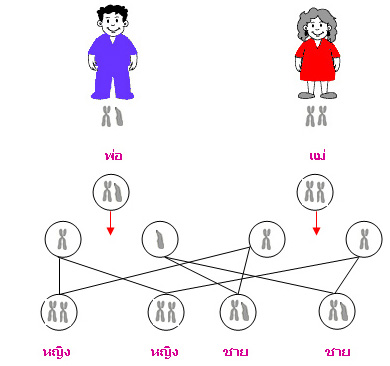

การกำหนดเพศ
การกำหนดเพศของมนุษย์เกี่ยวข้องกับโครโมโซมเพศ ซึ่งเป็นโครโมโซมคู่ที่ 23 โดยทั่วไปมนุษย์มีโครโมโซมเพศ 2 รูปแบบ คือ XX และ XY ผู้หญิงโดยทั่วไปมีโครโมโซมเพศ XX หมายถึง มีโครโมโซม X จำนวน 2 แท่ง ส่วนผู้ชายโดยทั่วไปมีโครโมโซมเพศ XY หมายถึง มีโครโมโซม X จำนวน 1 แท่ง และโครโมโซม Y จำนวน 1 แท่ง โดยโครโมโซม Y มีขนาดเล็กกว่าโครโมโซม X และมียีนบางชนิดที่เกี่ยวข้องกับการพัฒนาลักษณะเพศชาย เซลล์ไข่ของผู้หญิงโดยทั่วไปจะมีโครโมโซมเพศ X ส่วนเซลล์อสุจิของผู้ชายอาจมีโครโมโซม X หรือ Y เมื่อเกิดการปฏิสนธิ หากอสุจิที่มีโครโมโซม X ผสมกับไข่ จะได้โครโมโซมเพศ XX แต่หากอสุจิที่มีโครโมโซม Y ผสมกับไข่ จะได้โครโมโซมเพศ XY
ดังนั้น ในระบบการกำหนดเพศแบบ XX–XY โครโมโซมเพศจากอสุจิมีส่วนกำหนดว่าไซโกตจะเป็น XX หรือ XY อย่างไรก็ตาม การพัฒนาลักษณะทางเพศของมนุษย์มีความซับซ้อนและเกี่ยวข้องกับยีน ฮอร์โมน และกระบวนการพัฒนาของร่างกายด้วย นอกจากนี้ ยีนบางชนิดยังอยู่บนโครโมโซม X เรียกว่า ยีนเชื่อมโยงกับโครโมโซม X (X-linked gene) ตัวอย่างเช่น ยีนที่เกี่ยวข้องกับตาบอดสีแดง–เขียวและโรคฮีโมฟีเลียบางชนิด ผู้ชายที่มีโครโมโซม XY มี X เพียงหนึ่งแท่ง หากได้รับแอลลีลด้อยที่เกี่ยวข้องกับโรค ก็มีโอกาสแสดงลักษณะดังกล่าวได้ง่ายกว่าเพศหญิงแบบ XX ที่มี X อีกหนึ่งแท่ง การศึกษาการกำหนดเพศและการถ่ายทอดยีนบนโครโมโซมเพศช่วยให้เข้าใจการถ่ายทอดลักษณะทางพันธุกรรม และสามารถนำไปใช้ในการศึกษาความเสี่ยงของโรคทางพันธุกรรมบางชนิดได้